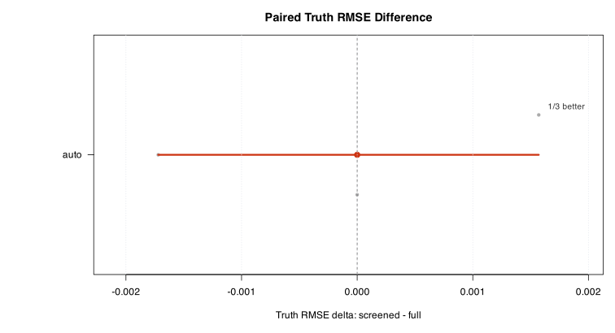
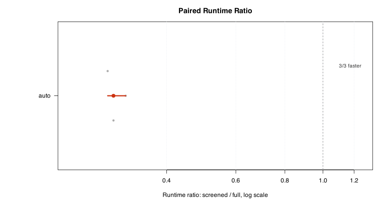
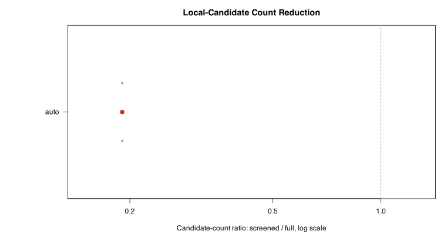
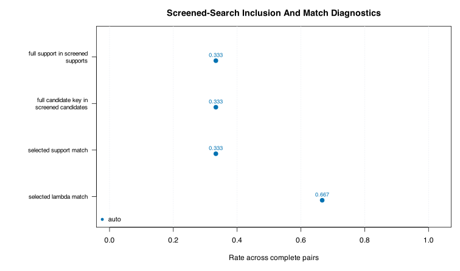
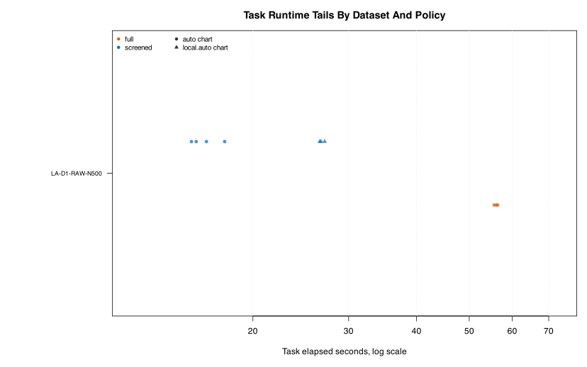

This report evaluates the S3R-expanded run, which compares the exact full PS-LPS local-candidate search against the faster screened local-candidate search. The scientific question is not whether PS-LPS is useful in general; it is whether screened search preserves the selected fits closely enough, while reducing candidate-search work and runtime, to justify using it in routine prospective experiments.
The run is paired. For each dataset, repetition, and chart-dimension rule, the full and screened arms use the same synthetic response and the same CV folds. This makes paired differences meaningful.
ok, giving 3 complete full/screened pairs out of 560 planned pairs. Recorded nonfinite fits: 0; errors: 0; timeouts: 0. The median screened-minus-full Truth RMSE delta among complete pairs is 0, and the median screened/full runtime ratio is 0.293.For a fitted value vector \(\hat f\) and known synthetic truth \(f\), Truth RMSE is
\[ R(\hat f, f)=\sqrt{\frac{1}{n}\sum_{i=1}^n(\hat f_i-f_i)^2}. \]The primary paired accuracy diagnostic is
\[ \Delta_R = R(\hat f_{\mathrm{screened}},f)-R(\hat f_{\mathrm{full}},f). \]Negative \(\Delta_R\) favors screened search; positive \(\Delta_R\) favors full search. Runtime and candidate-count diagnostics use ratios
\[ \rho_T=\frac{T_{\mathrm{screened}}}{T_{\mathrm{full}}},\qquad \rho_C=\frac{C_{\mathrm{screened}}}{C_{\mathrm{full}}}. \]Values below one mean screened search used less time or fewer local candidates. Red intervals in paired figures are Bayesian-bootstrap 95% credible intervals for the paired median. Gray points show individual paired datasets/repetitions.
Each intended pair is defined by (dataset_id, repetition, chart_dim_rule). The search_policy arm does not enter the response or fold seed formula, so the two arms in a pair share the same response and CV folds.
| planned_pairs | seed_matched_pairs | seed_mismatched_pairs |
|---|---|---|
| 560 | 560 | 0 |
Status is manifest-backed. timeout means the worker exceeded the task timeout; the exact threshold remains in error_class. Complete task-level detail is linked in the reproducibility section rather than shown as a large table.
| status | n |
|---|---|
| not_started | 1100 |
| ok | 10 |
| running | 10 |
Attempted tasks: 1120. Successful tasks: 10. Nonfinite fits: 0. Errors: 0. Timeouts: 0.
Accuracy deltas are computed only for complete ok/ok pairs, while all planned pairs remain in the linked pair table.
| chart_dim_rule | pair_status | n |
|---|---|---|
| auto | complete_ok | 3 |
| auto | incomplete | 277 |
| local.auto | complete_ok | 0 |
| local.auto | incomplete | 280 |
Complete pairs: 3 of 560.
This figure answers the main accuracy question. Each gray point is one paired case. The red point and interval summarize the paired median by chart-dimension rule. The zero line means screened and full selected fits with equal Truth RMSE.

This figure asks whether screened search reduces end-to-end task runtime. The plotted runtime is the task-level elapsed time recorded by the worker, including candidate search and final fit for that task.

This figure measures the intended computational mechanism: screened search should evaluate fewer local candidates than full search. The ratio is computed from the number of top-level local candidates evaluated in each paired arm. If the points sit near one, then the observed runtime difference is not explained by this coarse candidate-count diagnostic.

Figure 4 checks whether screened search looked in the right neighborhood of the local-candidate space. The local candidate key is support.size|degree|kernel. The first two rows ask: did screened search even evaluate the model that full search eventually selected? The last two rows ask a stricter question: after doing its own CV optimization, did screened search choose the same support size and the same synchronization penalty as full search?
In this run, degree and kernel are fixed, so candidate-key inclusion is essentially support-size inclusion. This is why the first two rows can look the same. Inclusion rates should be interpreted together with Figure 1: even when the exact support differs, the selected fit may have nearly the same Truth RMSE. The lambda-match row asks whether the two arms agree on the synchronization penalty after their respective support searches.

This figure shows all successful task runtimes by dataset, search policy, and chart rule. It is useful for planning S3R-expanded timeouts and worker counts. The y-axis uses datasets; the x-axis is log-scaled elapsed seconds.

The compact table below is a reader-facing summary. Full task and pair-level tables are linked in the appendix.
| chart rule | planned pairs | complete pairs | mean delta Truth RMSE | 95% CI low | 95% CI high | median delta Truth RMSE | median runtime ratio | median screened candidates | median full candidates | support inclusion rate | candidate-key inclusion rate |
|---|---|---|---|---|---|---|---|---|---|---|---|
| auto | 280 | 3 | -0.00005008 | -0.001913 | 0.001813 | 0 | 0.293 | 4 | 21 | 0.3333 | 0.3333 |
The predeclared interim readout is repetitions 1--10. The full summary uses all complete repetitions available in this result bundle. During an in-progress run, the all-available row is a monitoring summary rather than a final policy result.
| subset | complete_pairs | max_repetition | mean_delta_truth_rmse | ci95_lo | ci95_hi | median_delta_truth_rmse | median_elapsed_ratio_screened_full | median_candidates_screened | median_candidates_full | support_inclusion_rate | lambda_match_rate |
|---|---|---|---|---|---|---|---|---|---|---|---|
| repetitions_1_to_10 | 3 | 3 | -0.00005008 | -0.001913 | 0.001813 | 0 | 0.293 | 4 | 21 | 0.3333 | 0.6667 |
| all_available_repetitions | 3 | 3 | -0.00005008 | -0.001913 | 0.001813 | 0 | 0.293 | 4 | 21 | 0.3333 | 0.6667 |
This table helps identify whether screened search is stable across individual frozen P7X assets. Long tables remain linked below for reproducibility.
| dataset_id | planned_pairs | complete_pairs | mean_delta_truth_rmse | ci95_lo | ci95_hi | median_delta_truth_rmse | median_elapsed_ratio_screened_full | median_candidates_screened | median_candidates_full | support_inclusion_rate | lambda_match_rate |
|---|---|---|---|---|---|---|---|---|---|---|---|
| LA-D1-RAW-N500 | 40 | 3 | -0.00005008 | -0.001913 | 0.001813 | 0 | 0.293 | 4 | 21 | 0.3333 | 0.6667 |
This table groups paired deltas by geometry family. It is intended to show whether any geometry class behaves differently enough to require a policy exception.
| geometry_family | planned_pairs | complete_pairs | mean_delta_truth_rmse | ci95_lo | ci95_hi | median_delta_truth_rmse | median_elapsed_ratio_screened_full | median_candidates_screened | median_candidates_full | support_inclusion_rate | lambda_match_rate |
|---|---|---|---|---|---|---|---|---|---|---|---|
| VALENCIA depth-1 dCST | 40 | 3 | -0.00005008 | -0.001913 | 0.001813 | 0 | 0.293 | 4 | 21 | 0.3333 | 0.6667 |
This S3R-expanded result bundle currently has 10 successful tasks, 3 complete pairs, 0 nonfinite fits, 0 errors, and 0 timeouts. These counts are manifest-backed and should be used as the first report-readiness gate.
Accuracy evidence is paired for complete ok/ok pairs. The median screened-minus-full Truth RMSE delta is 0; values close to zero indicate screened search is preserving the selected fit well on the completed paired cases.
The median screened/full runtime ratio was 0.293 and the median screened/full candidate-count ratio was 0.1905. These two quantities separate realized wall-time savings from the intended candidate-search reduction mechanism. In this run screened search usually evaluated only a subset of the 21 full-search local candidates, which is consistent with the observed runtime speedup.
The final policy question for S3R-expanded is whether screened PS-LPS can replace full support search for routine runs, whether any exception is needed for auto or local.auto, and whether additional profiling or policy modification is needed.
Report build timestamp: 2026-06-07 19:58:39 EDT. Consumed result table timestamp: 2026-06-07 19:58:39 EDT.
task_status.csv: manifest-backed status for every planned task.task_summary.csv: one row per completed task summary.full_vs_screened_pairs.csv: one row per planned full/screened pair.local_candidate_details.csv: local candidate details used for inclusion diagnostics.paired_summary_by_chart_rule.csv: chart-rule summary table.paired_summary_by_dataset.csv: dataset summary table.paired_summary_by_geometry_family.csv: geometry-family summary table.paired_summary_by_repetition_subset.csv: interim 10-repetition and all-available summaries.candidate_inclusion_diagnostics.csv: candidate inclusion rates.